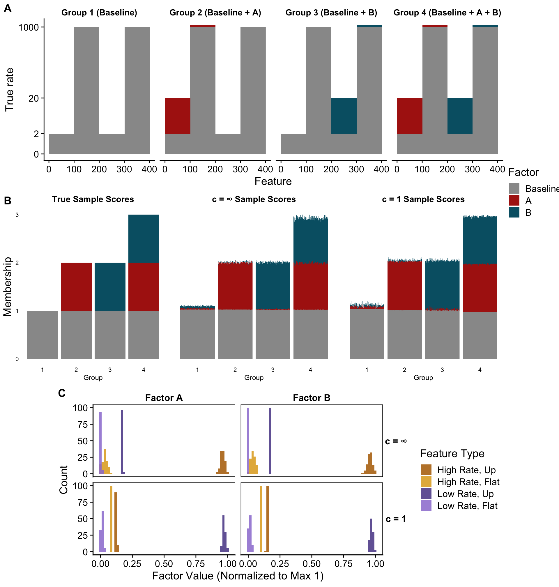

Last updated: 2026-07-22
Checks: 6 1
Knit directory: log1p_experiments/
This reproducible R Markdown analysis was created with workflowr (version 1.7.2). The Checks tab describes the reproducibility checks that were applied when the results were created. The Past versions tab lists the development history.
The R Markdown is untracked by Git. To know which version of the R
Markdown file created these results, you’ll want to first commit it to
the Git repo. If you’re still working on the analysis, you can ignore
this warning. When you’re finished, you can run
wflow_publish to commit the R Markdown file and build the
HTML.
Great job! The global environment was empty. Objects defined in the global environment can affect the analysis in your R Markdown file in unknown ways. For reproduciblity it’s best to always run the code in an empty environment.
The command set.seed(20240402) was run prior to running
the code in the R Markdown file. Setting a seed ensures that any results
that rely on randomness, e.g. subsampling or permutations, are
reproducible.
Great job! Recording the operating system, R version, and package versions is critical for reproducibility.
Nice! There were no cached chunks for this analysis, so you can be confident that you successfully produced the results during this run.
Great job! Using relative paths to the files within your workflowr project makes it easier to run your code on other machines.
Great! You are using Git for version control. Tracking code development and connecting the code version to the results is critical for reproducibility.
The results in this page were generated with repository version dfc34dc. See the Past versions tab to see a history of the changes made to the R Markdown and HTML files.
Note that you need to be careful to ensure that all relevant files for
the analysis have been committed to Git prior to generating the results
(you can use wflow_publish or
wflow_git_commit). workflowr only checks the R Markdown
file, but you know if there are other scripts or data files that it
depends on. Below is the status of the Git repository when the results
were generated:
Untracked files:
Untracked: analysis/factor_sim_identifiable_reduc.Rmd
Note that any generated files, e.g. HTML, png, CSS, etc., are not included in this status report because it is ok for generated content to have uncommitted changes.
There are no past versions. Publish this analysis with
wflow_publish() to start tracking its development.
library(ggplot2)
library(fastTopics)
library(log1pNMF)
library(cowplot)
theme_set(theme_cowplot())
set.seed(1)Here, we generate a \(1000 \times 400\) data matrix \(\mathbf{Y}\) from a rank-3 Poisson NMF model. Specifically, we first define a “baseline” factor \(\mathbf{f}_0\) and two sparse change factors \(\mathbf{f}_A\) and \(\mathbf{f}_B\). Ordering the \(p = 400\) features in four blocks of \(100\), we define these factors as
\[\begin{align} \mathbf{f}_0 &= \big(\underbrace{2, \ldots, 2}_{100},\ \underbrace{1000, \ldots, 1000}_{100},\ \underbrace{2, \ldots, 2}_{100},\ \underbrace{1000, \ldots, 1000}_{100}\big), \\ \mathbf{f}_A &= \big(\underbrace{18, \ldots, 18}_{100},\ \underbrace{100, \ldots, 100}_{100},\ \underbrace{0, \ldots, 0}_{100},\ \underbrace{0, \ldots, 0}_{100}\big), \\ \mathbf{f}_B &= \big(\underbrace{0, \ldots, 0}_{100},\ \underbrace{0, \ldots, 0}_{100},\ \underbrace{18, \ldots, 18}_{100},\ \underbrace{100, \ldots, 100}_{100}\big). \end{align}\]
Then, we define four groups of samples based on their loadings on these factors. Specifically, we define loadings as
\[\begin{equation} \mathbf{l}_i = \begin{cases} (1, 0, 0) & \text{if } 1 \leq i \leq 250 \\ (1, 1, 0) & \text{if } 250 < i \leq 500 \\ (1, 0, 1) & \text{if } 500 < i \leq 750 \\ (1, 1, 1) & \text{if } 750 < i \leq 1000 \end{cases} \end{equation}\]
where each loading is ordered \((l_{i0}, l_{iA}, l_{iB})\). For each sample \(i\) we define \(\boldsymbol{\lambda}_i = l_{i0} \mathbf{f}_0 + l_{iA} \mathbf{f}_A + l_{iB} \mathbf{f}_B\), and draw \(y_{ij} \sim \textrm{Poisson}(\lambda_{ij})\) independently across \(i\) and \(j\).
We designed the change factors so that each one acts on two kinds of features, distinguished by their baseline rate. The two kinds respond very differently when their change factor turns on:
| Feature type | Baseline rate (\(\mathbf{f}_0\)) | Rate when active | Fold change | Absolute change |
|---|---|---|---|---|
| High-baseline | \(1000\) | \(1100\) | \(1.1\times\) | \(+100\) |
| Low-baseline | \(2\) | \(20\) | \(10\times\) | \(+18\) |
That is, high-baseline features undergo a large absolute change but a small relative (fold) change, whereas low-baseline features undergo a large relative change but a small absolute change.
We note that while we have written this model using an additive link, we could equivalently describe it as a log1p NMF model with any value of \(c\). To do this for a given value of \(c\), we can keep the loadings \(\mathbf{l}_i\) unchanged and replace the factors as follows:
\[\begin{align} \mathbf{f}_0^{(c)} &= \alpha_c \log\!\left(1 + \tfrac{1}{c}\,\mathbf{f}_0\right), \\ \mathbf{f}_A^{(c)} &= \alpha_c \left[\log\!\left(1 + \tfrac{1}{c}(\mathbf{f}_0 + \mathbf{f}_A)\right) - \log\!\left(1 + \tfrac{1}{c}\,\mathbf{f}_0\right)\right], \\ \mathbf{f}_B^{(c)} &= \alpha_c \left[\log\!\left(1 + \tfrac{1}{c}(\mathbf{f}_0 + \mathbf{f}_B)\right) - \log\!\left(1 + \tfrac{1}{c}\,\mathbf{f}_0\right)\right], \end{align}\]
where \(\log(\cdot)\) is applied elementwise. With these factors, \(\alpha_c \log(1 + \lambda_{ij} / c) = l_{i0} f^{(c)}_{0j} + l_{iA} f^{(c)}_{Aj} + l_{iB} f^{(c)}_{Bj}\) holds exactly for every sample \(i\) and feature \(j\). Such a construction exists for any \(c\) only because factors \(A\) and \(B\) have disjoint support, in the sense that no feature is non-zero in both change factors, so the nonlinear link never has to represent an interaction between them.
nP <- 100 # genes per program panel
p <- 4 * nP
off_rel <- 2; on_rel <- 20 # relative-change genes (10x fold, +18)
off_abs <- 1000; on_abs <- 1100 # absolute-change genes (1.1x fold, +100)
panel <- factor(rep(c("A-rel", "A-abs", "B-rel", "B-abs"),
c(nP, nP, nP, nP)),
levels = c("A-rel", "A-abs", "B-rel", "B-abs"))
# the three true factors: baseline + two additive, up-regulating programs
baseP <- c(rep(off_rel, nP), rep(off_abs, nP), rep(off_rel, nP), rep(off_abs, nP))
devA <- c(rep(on_rel - off_rel, nP), rep(on_abs - off_abs, nP),
rep(0, nP), rep(0, nP))
devB <- c(rep(0, nP), rep(0, nP),
rep(on_rel - off_rel, nP), rep(on_abs - off_abs, nP))We simulate the four groups of samples, then fit two models: a topic model (the log1p model in the limit \(c \to \infty\)) and the log1p model at \(c = 1\). As we did in the paper, both models are initialized by first fitting a rank-1 model, and then other factors are initialized randomly.
Below are the results. It’s clear that both the log1pNMF model with \(c = 1\) and the \(c = \infty\) recover almost exactly the same loading structure. However, they differ greatly in the relative ordering of the features in the factors. In the \(c = \infty\) fit, the most highly ranked features are those with greatest absolute changes due to that factor, whereas in the \(c = 1\) fit the most highly ranked features are those with the greatest relative changes.
npop <- 250 # samples per group
La <- c(0, 1, 0, 1) # program-A indicator per group
Lb <- c(0, 0, 1, 1) # program-B indicator per group
groupname <- c("Group 1 (Baseline)", "Group 2 (Baseline + A)",
"Group 3 (Baseline + B)", "Group 4 (Baseline + A + B)")
prof <- sapply(1:4, function(i) baseP + La[i] * devA + Lb[i] * devB) # p x 4
Lambda <- t(prof[, rep(1:4, each = npop)]) # n x p
n <- nrow(Lambda)
Y <- matrix(rpois(n * p, as.vector(t(Lambda))), nrow = n, ncol = p, byrow = TRUE)
rownames(Y) <- paste0("cell", 1:n)
colnames(Y) <- paste0("gene", 1:p)
# true loadings: baseline on in all samples, programs on per group
Ltrue <- cbind(Baseline = 1, A = La[rep(1:4, each = npop)],
B = Lb[rep(1:4, each = npop)])# topic model (= log1p as c -> Inf): rank-1 init has to be built manually
r1 <- fastTopics:::fit_pnmf_rank1(Y)
init_LL <- cbind(r1$L, matrix(1e-3, n, 2)); rownames(init_LL) <- rownames(Y)
init_FF <- cbind(r1$F, matrix(1e-3, p, 2)); rownames(init_FF) <- colnames(Y)
tm <- fit_poisson_nmf(Y, fit0 = init_poisson_nmf(Y, F = init_FF, L = init_LL),
verbose = "none")
# log1p model at c = 1 (rank-1 is the default init_method)
set.seed(1)
lp <- fit_poisson_log1p_nmf(Y, K = 3, loglik = "exact", init_method = "rank1",
control = list(maxiter = 200, verbose = FALSE))
# --- helpers: put fitted factors in (Baseline, A, B) order so all plots agree ---
ord_of <- function(L) {
cc <- function(t) suppressWarnings(apply(L, 2, function(x) cor(x, t)))
jA <- which.max(cc(Ltrue[, "A"])); jB <- which.max(cc(Ltrue[, "B"]))
c(setdiff(seq_len(ncol(L)), c(jA, jB)), jA, jB)
}
relabel <- function(L) {
M <- L[, ord_of(L), drop = FALSE]; colnames(M) <- c("Baseline", "A", "B"); M
}
# shared factor colors, and a role palette kept clear of the A/B (red/teal) hues:
# amber = high-baseline features, purple = low-baseline; darker = up, lighter = flat.
# The role palette is validated colorblind-safe (adjacent CVD dE >= 8, all four in
# the L 0.43-0.77 band with real chroma); the legend supplies the labels the
# lighter fills need for contrast relief.
FACCOL <- c("Baseline" = "grey60", "A" = "#AE2012", "B" = "#005F73")
ROLECOL <- c("High Rate, Up" = "#B36A00", "High Rate, Flat" = "#E0A81E",
"Low Rate, Up" = "#574494", "Low Rate, Flat" = "#9B7FD4")## ---------------- Panel A: ground-truth rates by group ----------------
# split each group's rate into a grey baseline plus an additive, colored cap for
# each active program; geom_rect with data-space ymin/ymax keeps the segment
# boundaries at the true rates under the log1p axis
seg1 <- function(k) {
out <- data.frame(gene = 1:p, ymin = 0, ymax = baseP, factor = "Baseline")
if (La[k] == 1) out <- rbind(out, data.frame(gene = 1:p, ymin = baseP,
ymax = baseP + devA, factor = "A")[devA > 0, ])
if (Lb[k] == 1) out <- rbind(out, data.frame(gene = 1:p, ymin = baseP,
ymax = baseP + devB, factor = "B")[devB > 0, ])
out$factor <- factor(out$factor, levels = c("Baseline", "A", "B")); out
}
# a single faceted plot so the four groups have EQUAL panel widths and share one
# scale; facet_wrap then shows the y-axis only on the leftmost panel
segA <- do.call(rbind, lapply(1:4, function(k)
transform(seg1(k), group = factor(groupname[k], levels = groupname))))
# one shared "Factor" legend, placed left of Panel A and right of Panel B
leg_factor <- get_legend(
ggplot(data.frame(x = 1, f = factor(c("Baseline", "A", "B"),
levels = c("Baseline", "A", "B"))),
aes(x, 1, fill = f)) + geom_col() +
scale_fill_manual(values = FACCOL, name = "Factor") +
theme(legend.position = "right"))
panelA <- ggplot(segA, aes(xmin = gene - 0.5, xmax = gene + 0.5,
ymin = ymin, ymax = ymax, fill = factor)) +
geom_rect() +
facet_wrap(~ group, nrow = 1) +
scale_fill_manual(values = FACCOL, name = "Factor", drop = FALSE) +
scale_y_continuous(trans = "log1p", breaks = c(0, 2, 20, 1000), limits = c(0, 1100)) +
labs(x = "Feature", y = "True rate") +
theme(legend.position = "none", strip.background = element_blank(),
strip.text = element_text(size = 11, face = "bold"))
## ---------------- Panel B: structure plots (baseline on the bottom) ----------------
grp <- factor(rep(1:4, each = npop)) # numeric group per sample
SP <- function(L, title, ylab = FALSE) {
g <- structure_plot(log1pNMF:::normalize_bars(pmax(L, 0)),
loadings_order = seq_len(nrow(L)), grouping = grp, gap = 24,
topics = c("B", "A", "Baseline"), colors = FACCOL) +
ggtitle(title) + labs(x = "Group", y = if (ylab) "Membership" else NULL) +
theme(plot.title = element_text(size = 11, hjust = 0.5), legend.position = "none",
axis.title.y = element_text(size = 14),
axis.text.x = element_text(angle = 0, hjust = 0.5))
if (!ylab) g <- g + theme(axis.text.y = element_blank(),
axis.ticks.y = element_blank())
g
}
panelB <- plot_grid(SP(Ltrue, "True Sample Scores", ylab = TRUE),
SP(relabel(tm$L), "c = ∞ Sample Scores"),
SP(relabel(lp$LL), "c = 1 Sample Scores"), nrow = 1)
## ---------------- Panel C: factor-value histograms by gene role ----------------
role_for <- function(prog) {
other <- setdiff(c("A", "B"), prog)
factor(ifelse(panel == paste0(prog, "-abs"), "High Rate, Up",
ifelse(panel == paste0(other, "-abs"), "High Rate, Flat",
ifelse(panel == paste0(prog, "-rel"), "Low Rate, Up",
"Low Rate, Flat"))),
levels = c("High Rate, Up", "High Rate, Flat",
"Low Rate, Up", "Low Rate, Flat"))
}
fac_df <- function(F, L, model) {
Fo <- F[, ord_of(L)] # (Baseline, A, B)
rbind(data.frame(value = Fo[, 2] / max(Fo[, 2]), role = role_for("A"),
factor = "Factor A", model = model),
data.frame(value = Fo[, 3] / max(Fo[, 3]), role = role_for("B"),
factor = "Factor B", model = model))
}
facC <- rbind(fac_df(tm$F, tm$L, "c = ∞"), fac_df(lp$FF, lp$LL, "c = 1"))
facC$model <- factor(facC$model, levels = c("c = ∞", "c = 1"))
panelC <- ggplot(facC, aes(value, fill = role)) +
geom_histogram(position = "identity", alpha = 0.85, bins = 60) +
facet_grid(model ~ factor) +
scale_fill_manual(values = ROLECOL, name = "Feature Type") +
labs(x = "Factor Value (Normalized to Max 1)", y = "Count") +
theme(strip.background = element_blank(), strip.text = element_text(face = "bold"),
strip.text.y = element_text(angle = 0),
panel.border = element_rect(colour = "black", fill = NA, linewidth = 0.7))
## ---------------- assemble: A over B share one legend (right, centered); C centered below ----------------
AB <- plot_grid(panelA, panelB, ncol = 1, labels = c("A", "B"), rel_heights = c(1, 1))
top <- plot_grid(AB, leg_factor, ncol = 2, rel_widths = c(1, 0.10))
Crow <- plot_grid(NULL, panelC, NULL, ncol = 3, rel_widths = c(0.12, 1, 0.12),
labels = c("", "C", ""))
plot_grid(top, Crow, ncol = 1, rel_heights = c(2, 1.05))
sessionInfo()R version 4.5.2 (2025-10-31)
Platform: aarch64-apple-darwin20
Running under: macOS Ventura 13.5
Matrix products: default
BLAS: /System/Library/Frameworks/Accelerate.framework/Versions/A/Frameworks/vecLib.framework/Versions/A/libBLAS.dylib
LAPACK: /Library/Frameworks/R.framework/Versions/4.5-arm64/Resources/lib/libRlapack.dylib; LAPACK version 3.12.1
locale:
[1] en_US.UTF-8/en_US.UTF-8/en_US.UTF-8/C/en_US.UTF-8/en_US.UTF-8
time zone: America/New_York
tzcode source: internal
attached base packages:
[1] stats graphics grDevices utils datasets methods base
other attached packages:
[1] cowplot_1.2.0 log1pNMF_0.1-6 fastTopics_0.7-38 ggplot2_4.0.3
loaded via a namespace (and not attached):
[1] gtable_0.3.6 xfun_0.57 bslib_0.10.0
[4] htmlwidgets_1.6.4 ggrepel_0.9.8 lattice_0.22-9
[7] quadprog_1.5-8 vctrs_0.7.3 tools_4.5.2
[10] generics_0.1.4 parallel_4.5.2 tibble_3.3.1
[13] pkgconfig_2.0.3 Matrix_1.7-5 data.table_1.18.2.1
[16] SQUAREM_2026.1 RColorBrewer_1.1-3 S7_0.2.2
[19] RcppParallel_5.1.11-2 lifecycle_1.0.5 truncnorm_1.0-9
[22] compiler_4.5.2 farver_2.1.2 stringr_1.6.0
[25] git2r_0.36.2 progress_1.2.3 RhpcBLASctl_0.23-42
[28] httpuv_1.6.17 htmltools_0.5.9 sass_0.4.10
[31] yaml_2.3.12 lazyeval_0.2.3 plotly_4.12.0
[34] crayon_1.5.3 later_1.4.8 pillar_1.11.1
[37] jquerylib_0.1.4 tidyr_1.3.2 MASS_7.3-65
[40] uwot_0.2.4 cachem_1.1.0 gtools_3.9.5
[43] tidyselect_1.2.1 digest_0.6.39 Rtsne_0.17
[46] stringi_1.8.7 reshape2_1.4.5 dplyr_1.2.1
[49] purrr_1.2.2 ashr_2.2-63 labeling_0.4.3
[52] rprojroot_2.1.1 fastmap_1.2.0 grid_4.5.2
[55] cli_3.6.6 invgamma_1.2 magrittr_2.0.5
[58] dichromat_2.0-0.1 withr_3.0.2 prettyunits_1.2.0
[61] scales_1.4.0 promises_1.5.0 rmarkdown_2.31
[64] httr_1.4.8 startupmsg_1.0.0 otel_0.2.0
[67] workflowr_1.7.2 hms_1.1.4 pbapply_1.7-4
[70] evaluate_1.0.5 distr_2.9.7 knitr_1.51
[73] irlba_2.3.7 viridisLite_0.4.3 rlang_1.2.0
[76] Rcpp_1.1.1-1.1 mixsqp_0.3-54 glue_1.8.1
[79] rstudioapi_0.18.0 jsonlite_2.0.0 plyr_1.8.9
[82] R6_2.6.1 sfsmisc_1.1-23 fs_2.1.0